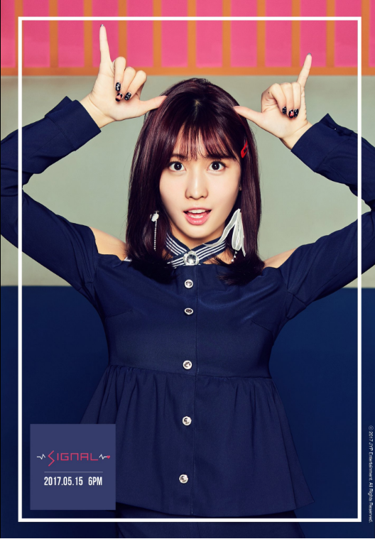

M O M O

Stage Name: Momo
Birth Name: Hirai Momo (平井 もも)
Nationality: Japanese
Position: Main Dancer, Vocalist, Sub-Rapper
Birthday: November 9, 1996
Zodiac Sign: Scorpio
Official height: 167 cm (5’6″) / Appox. Real Height: 163 cm (5’4″)*
Weight: 48 kg (106 lbs)
Blood Type: A
Momo facts:
She was born in Kyōtanabe, Kyoto, Japan.
She was scouted by JYP Entertainment after they saw a dance video of her and her older sister.
She passed the audition from April 13, 2012. She sister didn’t make it though.
Momo means Peach in Japanese.
Momo has the most confidence in dancing to urban. She also likes dancing to hip hop.
She stared taking dancing lessons since she was 3 years old, because she wanted to follow her older sister.
She is a big food lover. She especially likes jokbal (a Korean dish consisting of pig’s trotters cooked with soy sauce and spices).
Momo doesn’t like cucumbers, watermelon, and melon.
Momo doesn’t like drinking milk.
When Momo can’t sleep, she watches dramas.
She likes dolls/stuffed-toys.
Momo likes the color pink.
Momo has 3 dogs (female dogs), named Petco, Pudding, and Lucky.
Momo and GOT7’s BamBam both have moms who are big fans of Rain.
Momo’s family have 3 dogs, who are named Petco, Pudding, and Lucky (they are all females).
There was a rumor that Momo used to have a boyfriend in Japan, however she currently has no boyfriend.
In the winter time, Momo recommends going to Arima Onsen (hot springs) in Japan.
She appeared in GOT7’s “Stop Stop It” MV, Junho’s “Feel” (Japanese) MV, miss A’s “Only You” MV, and Wooyoung’s “Rose” (Japanese) MV
Momo appeared in Heechul’s and Min Kyung Hoon’s “Sweet Dream” MV.
Momo’s ideal type: Someone who eats well (but not overweight); Someone who loves JokBal (Pig’s feet dish)
Learn More